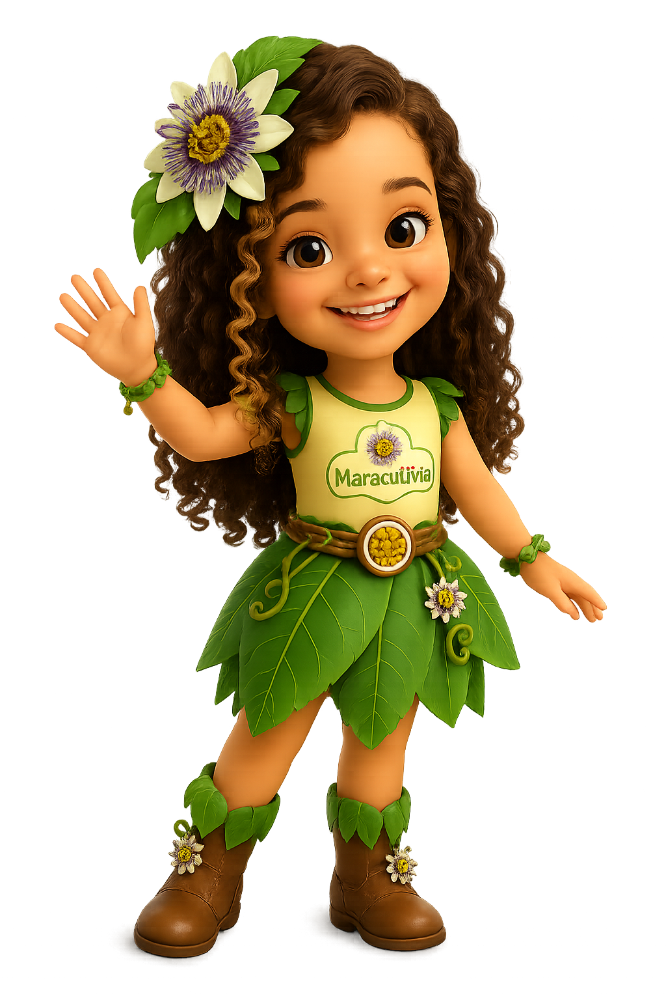

🌍 Origem
Originário da América do Sul, o maracujá já era cultivado pelos povos indígenas.
Sabor que vem da natureza
conheça curiosidades, receitas e beneficios de cada fruta.
Originário da América do Sul, o maracujá já era cultivado pelos povos indígenas.
Algumas substâncias presentes nas folhas do maracujá são usadas em chás.
O maracujá possui vitamina C, fibras e antioxidantes.
pode ser utilizado em sucos, bolos, mousses, geleia e molhos.
